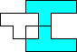

Conjecture: If n≥22 is an integer, then a n×n square can be tiled by other integer-sided squares, using no more than 2 squares of any given size.
#2. In February 1999, we explored tiling rectangles with linear disconnected polyominoes. Do any of the 7 "length 9" polyominoes below tile any rectangle?
| / | | / | | / | | / | | / | | / |
|
Conjecture: None of the shapes above can tile a rectangle.
#3. In April 1999, we defined a shape to be n-convex if n copies of it can be arranged in a convex shape, and we defined the spectrum of a shape to be the set of all n for which the shape is n-convex. Is there a shape with spectrum {1,5}, {2,5}, {3,4}, {3,5}, {4,5}, {1,3,5}, {1,4,5}, {2,3,5}, {2,4,5}, {3,4,5}, {1,2,4,5}, or {1,3,4,5}?
Conjecture: No shape has any of the above spectra.
#4. In August 2000, we defined a number to be a Friedman number if it can be written in a non-trivial way using its digits and the operations + – × / ^ ( ) and concatenation. A nice Friedman number uses the digits in the same order. All of the 6-digit Friedman numbers are known. Are there any other 6-digit nice Friedman numbers other than the ones listed here?
Conjecture: There are some 6-digit nice Friedman numbers yet to be discovered.
#5. In December 2000, we explored equations of the form Π (ai)(bi) = Π (ci)(di) where the integers from 1 to 2n each appear exactly once as one of the ai, bi, ci or di. Is this always possible for n≥2?
Conjecture: For every n≥2, the equation Π (ai)(bi) = Π (ci)(di) has a solution where the integers from 1 to 2n each appear exactly once as one of the ai, bi, ci or di.
#6. In December 2001, we defined a k-slab to be a (k)×(ik)×(jk) box for some integers i and j. What cubes can be tiled with k-slabs for 1≤k≤n, besides the trivial 1×1×1 cube (for n=1) and the 6×6×6 cube (for n=3)?
Conjecture: There are infinitely many cubes that can be tiled with k-slabs for 1≤k≤n.
#7. In August 2002, we defined the partridge number of the shape S to be the smallest n for which 1 copy of S, 2 copies of S magnified by 2, 3 copies of S magnified by 3, ... up to n copies of S magnified by n can tile a copy of S magnified by n(n+1)/2. The smallest known partridge number is 4, for a 30-60-90 right triangle, and for any trapezoid with bases of length 3 and 6 and a side of length 8. Are there any other shapes that have partridge number 4?
Conjecture: There are other shapes with partridge number 4.
#8. In November 2002, we defined an integer matrix to be a sum-product matrix if the sum of each row is the same, and the product of each column is the same. There are even 2×n sum-product matrices where the common sum and common product are the same. Are there m×n sum-product matrices with this property with m≥3?
Conjecture: Every sum-product matrix with the common sum equal to the common product has only 2 rows.
#9. In November 2003, we defined a Hanoi tiling of a square as a tiling with integer-sided squares so that each square not on the bottom layer lies on top of one or more larger squares. It is known that every n×n for n≥34 has a Hanoi tiling. Even if we insist that the bottom layer of such a tiling have at least k squares, is it true that every sufficiently large square has a Hanoi tiling?
Conjecture: Every sufficiently large square has a Hanoi tiling with k squares on its bottom layer.
#10. In May 2005, we studied tilings of rectangles with equal number of squares of sides 1 through n. It is known that 2 of each square tile a rectangle for 1≤n≤20 and for n=24. Is this also true for 21≤n≤23 and n≥25?
Conjecture: Two squares each of sides 1 through n always tile some rectangle.
#11. In November 2005, we explored the adjacency graphs of sets of identical polyominoes. What are the smallest configurations of identical polyominoes with these 4-regular adjacency graphs?
 |  |  |  | 
|
Conjecture: All of these graphs can be realized as the adjacency graph of some set of identical polyominoes.
#12. In December 2005, we investigated matchstick graphs, planar graphs where every edge has unit length. We asked what the smallest matchstick graph was where every vertex has degree 4 or 11. The smallest known graph has changed more than a dozen times since then. Now the smallest known is the graph below. Is this the smallest one?

Conjecture: There is a smaller matchstick graph whose vertices all have degree 4 or 11.
#13. In February 2006, we explored 4-regular planar graphs where the edges incident to each vertex has given lengths. Only these 3 graphs are known, but surely there are more.
 {1,1,1,√3} |  {1,1,1,.736} |  {1,1,1.985,1.1985} |
Conjecture: There are infinitely many such graphs with edge lengths {1,1,1,x} and {1,1,x,x} for various values of x.
#14. In February 2007, we investigated positions of 2 kinds of chess pieces, each of which the same number of the other piece but none of their own. Is there a position where each bishop attacks 2 knights and each knight attacks 3 bishops? We abbreviate this as (B=2, N=3). Here are all the unsolved cases: (B=2, N=3), (B=2, K=4), (B=2, Q=5), (B=4, Q=3), (K=2, Q=5), (N=3, R=3), (N=4, R=2), (N=3, Q=2), (R=4, Q=3).
Conjecture: Most of these configurations do not exist, but some do.
#15. In May 2007, we studied placing copies of a single polyomino in a square so that every row and column contained the same number of filled squares. It is known which n-ominoes this can be done for 1≤n≤6. It is not known whether this can be done for the heptominoes below.

Conjecture: None of the heptominoes above can be arranged in a square so that every row and column contain the same number of filled squares.
#16. In June 2008, we investigated power equations that remained true if all the bases and exponents are switched. The equation below with 20 terms on each side is an infinite family of such equations. Is there an infinite family with fewer than 20 terms per side?
Conjecture: There is an infinite family of power equations with fewer than 20 terms per side that remains true if all the bases and exponents are switched.
#17. In July 2008, we defined pack(P,F) to be the maximum number of copies of a polyomino P that can be packed without overlap inside a polyomino frame F. For a given polyomino P, what is the smallest frame F so that there exists an n so that P is the only polyomino with pack(P,F)=n? The answers for the pentominoes are shown below. What are the answers for the hexominoes? Do such minimal frames always exist?

| 
| 
| 
| 
| 
| 
| 
| 
|  | 
|
Conjecture: Minimal frames exist for all k-ominoes, and the number of copies n required never exceeds k.
#18. In September 2008, we defined 2 different shapes A and B to be n-symbiotic if for every 0≤k≤n, k smaller copies of A and (n–k) smaller copies of B can tile either A or B. If A and B are rectifiable polyominoes, are A and B n-symbiotic for some value of n?
Conjecture: If A and B are rectifiable polyominoes, A and B are n-symbiotic for some value of n.
#19. In August 2011, we tried to find polyomino jigsaw puzzles in square trays that had exactly n different solutions, for various n. All values of n less than 100 are known except n=59. Is there such a puzzle?
Conjecture: There is a polyomino jigsaw puzzle inside a square tray with exactly 59 solutions.
#20. In May 2012, we investigated tiling almost squares, integer-sided n×(n+1) rectangles. It seems like every almost square larger than the 19×20 almost square can be tiled with distinct smaller copies. Is this true?
Conjecture: For every integer n≥20, an n×(n+1) rectangle can be tiled with smaller distinct k×(k+1) rectangles.
#21. In October 2013, we studied placements of chess pieces whose possible captures realized regular digraphs. It is known for all 2-regular digraphs with 6 or fewer vertices whether they are the capture graph for a chess position except those below. Are these the capture graph for some chess position?

| 
| 
| 
|
Conjecture: These graphs are not the capture graphs of chess positions.
#22. In June 2014, we explored polycubes whose faces all had the same area n. These exist for n≥4, though the cases of n=6, n=7, and n=10 all require more than 200 cubes. The case of n=1 is trivial, n=2 has been been proved impossible, and n=3 is unknown. Is there a polycube where every face has area 3?
Conjecture: There is no polycube where every face has area 3.
#23. In July 2014, we investigated tiling cubes with integer-sided cubes. Does any such tiling exist that uses fewer than 8 cubes of every size used?
Conjecture: It is possible to tile a cube with integer-sided cubes, using no more than 7 of any size.
If you can extend any of these results, please e-mail me.
Click here to go back to Math Magic.